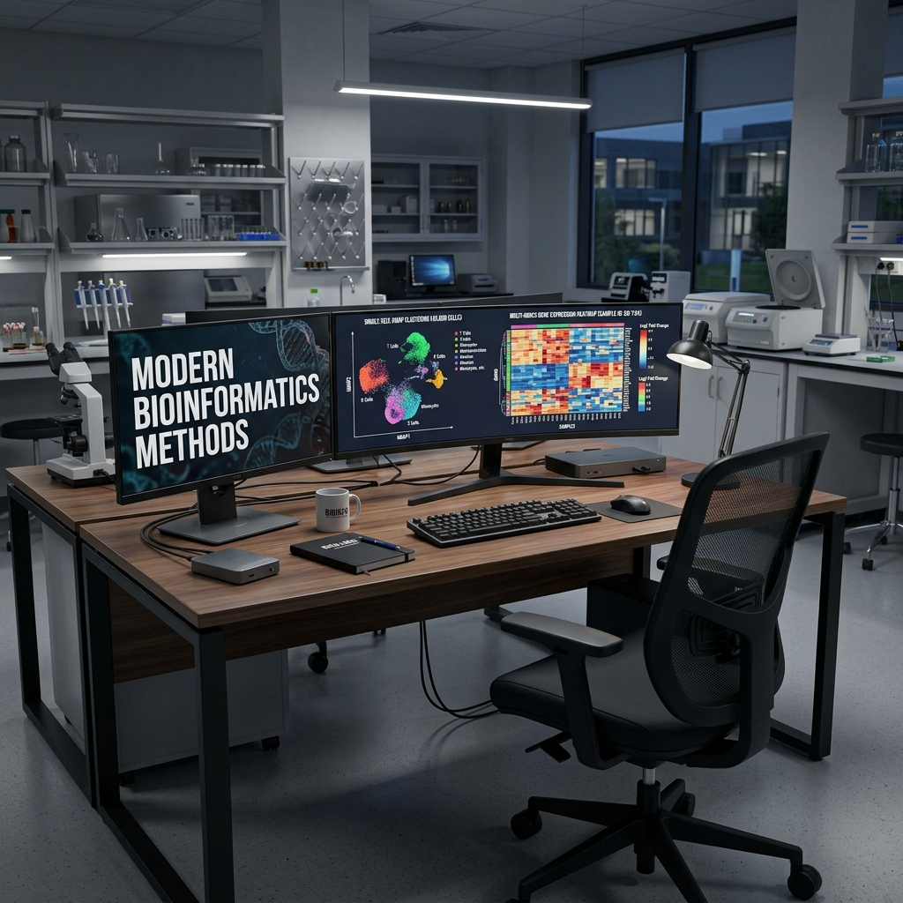

Modern Methods Landscape
Nasir Mahmood Abbasi, PhD
Bioinformatics Educator

Learning Objectives & Prerequisites
- Prerequisites: Basic understanding of the Linux terminal and bioinformatics concepts. (See Start Here)
- Objective: Master the core concepts and practical commands of this topic.
- Expected Output: A reproducible workflow and a clear understanding of the methodology.
The Changing Landscape of Computational Biology
Bioinformatics is evolving faster than ever. The period between 2024 and 2025 has seen a fundamental shift in how biological data is analyzed, moving from algorithm-by-algorithm pipelines toward unified, AI-assisted frameworks that can process millions of cells across multiple data modalities simultaneously.
This tutorial provides a research-grounded overview of the methods that are now considered best practice, helping you understand not just how to use them, but why they represent improvements over earlier approaches.
1. Foundation Models for Single-Cell Genomics
The Problem They Solve
Traditional single-cell analysis requires manual curation of marker gene lists for cell type annotation, which is time-consuming, expert-dependent, and difficult to scale. As single-cell atlases have grown to tens of millions of cells, a new approach has emerged: training large language-model-style transformers directly on gene expression data.
Key Methods
scGPT (Single-Cell Generative Pre-Training Transformer) is a foundation model trained on over 33 million human single cells. It can be fine-tuned for: - Cell type annotation (zero-shot and few-shot) - Gene regulatory network inference - Multi-batch integration
CellTypist provides a simpler, logistic-regression-based automated annotation tool trained on curated immune cell atlases. It is faster than deep learning approaches but less generalizable.
Research context: Cui et al. (2024, Nature Methods) demonstrated that scGPT achieves state-of-the-art cell type classification accuracy on held-out tissues, particularly for rare cell types that manual annotation frequently misclassifies.
When to Use Which
| Scenario | Recommended Tool |
|---|---|
| Large immune profiling study | CellTypist (fast, specialized) |
| Novel tissue with unknown cell types | scGPT (generalizable) |
| Bulk reference annotation | Manual markers + CellTypist |
| Multi-tissue atlas integration | scGPT with fine-tuning |
Practical Setup
# CellTypist installation
mamba create -n celltypist python=3.10
conda activate celltypist
pip install celltypist
# scGPT installation (requires CUDA for GPU acceleration)
mamba create -n scgpt python=3.10 pytorch-cuda=11.8 -c pytorch -c nvidia
conda activate scgpt
pip install scgpt
2. Multi-Omics Integration: Seurat v5 Bridge Integration
Why Multi-Omics?
Measuring only RNA captures gene expression, but not chromatin accessibility (ATAC-seq), protein abundance (CITE-seq), or spatial position. Modern experimental designs increasingly pair these modalities, and the computational challenge is integrating them meaningfully.
The Bridge Integration Framework (Seurat v5)
Seurat v5 introduced a new paradigm called bridge integration (Hao et al., 2024, Nature Biotechnology). The key innovation is that you no longer need paired measurements in the same cells. Instead, you use a "bridge" multimodal dataset (cells with both RNA and ATAC measured) to infer a shared embedding for separately profiled RNA and ATAC datasets.
# Example: Bridge integration of scRNA-seq and scATAC-seq
library(Seurat)
# Load datasets
rna_data <- readRDS("pbmc_rna.rds")
atac_data <- readRDS("pbmc_atac.rds")
bridge_data <- readRDS("pbmc_multiome.rds") # Paired RNA+ATAC
# Normalize bridge dataset
bridge_data <- SCTransform(bridge_data, assay = "RNA")
bridge_data <- RunTFIDF(bridge_data, assay = "ATAC")
# Perform bridge integration
extended_ref <- PrepareBridgeReference(
reference = bridge_data,
bridge.assay = "ATAC",
reference.reduction = "spca",
reference.dims = 1:50
)
# Map query ATAC onto the bridge reference
pbmc.atac <- MapQuery(
anchorset = anchors,
query = atac_data,
reference = extended_ref,
refdata = list(celltype = "celltype")
)
scTFBridge: Linking ATAC to Transcription Factor Activity
For researchers interested in regulatory genomics, scTFBridge (2025) disentangles latent spaces from paired RNA and ATAC data to infer transcription factor (TF) activity. This allows you to ask: which TFs are driving the transcriptional programs I observe in my RNA clusters?
3. Spatial Transcriptomics: From Spots to Single Cells
The Resolution Problem
Standard Visium spatial transcriptomics captures gene expression at 55-micron spots, each of which typically contains 5-20 cells. This means you cannot directly determine which cell type within a spot is expressing which gene.
Current Solutions (2025-2026)
SpatialCell AI (2025) uses morphology-guided deep learning, leveraging the H&E histological image alongside the gene expression data to infer single-cell resolution from spot-based data. It was benchmarked against ground-truth Xenium data in breast cancer tissue.
SpatialGlue (2024, Nature Methods) uses graph neural networks to integrate spatial transcriptomics with spatial ATAC-seq, enabling identification of spatially-resolved regulatory domains that are not detectable from either modality alone.
Squidpy is the Python ecosystem's primary tool for spatial analysis, built on top of AnnData and fully compatible with Scanpy workflows.
# Spatial analysis with Squidpy
import squidpy as sq
# Load Visium data
adata = sq.datasets.visium_hne_adata()
# Compute spatial neighbors graph
sq.gr.spatial_neighbors(adata, coord_type="visium")
# Co-occurrence analysis between cell types
sq.gr.co_occurrence(adata, cluster_key="cluster")
sq.pl.co_occurrence(adata, cluster_key="cluster", clusters="Hippocampus")
# Neighborhood enrichment test
sq.gr.nhood_enrichment(adata, cluster_key="cluster")
sq.pl.nhood_enrichment(adata, cluster_key="cluster", method="average")
4. Long-Read Single-Cell Sequencing
Why Long Reads?
Short-read technologies (Illumina) excel at quantifying known transcripts but cannot distinguish between alternative splice isoforms or detect full-length cDNA. Long-read platforms (Oxford Nanopore, PacBio) solve this but introduce new computational challenges.
Key Tools (2025 Benchmarks)
| Tool | Platform | Strength |
|---|---|---|
| FLAMES | Nanopore/PacBio | Isoform discovery + quantification |
| IsoQuant | Nanopore | High accuracy splice junction detection |
| Bambu | Nanopore | Novel transcript discovery |
| scISOrSeq | PacBio | Full-length isoform single-cell analysis |
A comprehensive 2025 benchmarking study (bioRxiv, Lebrigand et al.) evaluated 12 tools across 5 datasets, finding that IsoQuant and FLAMES were the most accurate for UMI correction in single-cell Nanopore data.
# FLAMES: Full-Length Analysis of Mutations and Splicing
mamba create -n flames python=3.10 -c conda-forge -c bioconda
conda activate flames
mamba install flames
# Run single-cell isoform pipeline
python -m flames.sc_long_pipeline \
--gff3 reference.gff3 \
--genomefa genome.fa \
--fastq reads.fastq \
--outdir results/ \
--barcodes barcodes.tsv
5. Pseudotime and Trajectory Analysis
From Static Snapshots to Dynamic Trajectories
Single-cell RNA-seq provides a static snapshot of cellular states, but we can infer dynamics by assuming that gene expression changes continuously. Trajectory inference (pseudotime) orders cells along biological processes like differentiation.
Best Practices (2024)
The dynverse benchmarking effort (Saelens et al.) evaluated 45 trajectory methods and found that method choice depends strongly on the expected topology:
| Topology | Recommended Method |
|---|---|
| Linear differentiation | Monocle 3, Slingshot |
| Branching (e.g., bifurcation) | Slingshot, PAGA |
| Cyclic (cell cycle) | Cyclone, tricycle |
| Tree (multiple lineages) | Monocle 3 |
# Trajectory inference with scVelo (RNA velocity)
import scvelo as scv
adata = scv.datasets.pancreas()
# Preprocess
scv.pp.filter_and_normalize(adata, min_shared_counts=20, n_top_genes=2000)
scv.pp.moments(adata, n_pcs=30, n_neighbors=30)
# Estimate RNA velocity
scv.tl.velocity(adata)
scv.tl.velocity_graph(adata)
# Visualize
scv.pl.velocity_embedding_stream(adata, basis='umap')
6. Differential Expression: Moving Beyond Simple Tests
The Pseudobulk Revolution
A major conceptual shift in 2023-2024 was the recognition that naive single-cell differential expression (DE) tests are massively anti-conservative due to pseudo-replication: treating each cell as an independent replicate when cells from the same donor are correlated.
The solution: pseudobulk DE analysis
Cells from each donor in each condition are aggregated (summed) into a single "pseudobulk" sample, and then bulk RNA-seq methods (DESeq2, edgeR) are applied. This is now the community standard for comparing conditions across donors.
# Pseudobulk DE with DESeq2 in Seurat
library(Seurat)
library(DESeq2)
# Aggregate counts per sample per cluster
pseudo_bulk <- AggregateExpression(
seurat_obj,
assays = "RNA",
return.seurat = TRUE,
group.by = c("celltype", "donor_id", "condition")
)
# Standard DESeq2 workflow on aggregated data
counts_matrix <- GetAssayData(pseudo_bulk, assay = "RNA", slot = "counts")
metadata <- pseudo_bulk@meta.data
dds <- DESeqDataSetFromMatrix(
countData = counts_matrix,
colData = metadata,
design = ~ condition
)
dds <- DESeq(dds)
results <- results(dds, contrast = c("condition", "treated", "control"))
Summary: Choosing the Right Method
| Research Question | Modern Approach (2025) |
|---|---|
| Annotate cell types automatically | CellTypist / scGPT |
| Integrate RNA + ATAC | Seurat v5 bridge integration |
| Map spatial cell types | SpatialGlue / Squidpy + deconvolution |
| Resolve splice isoforms | FLAMES / IsoQuant |
| Infer differentiation trajectory | Monocle 3 / Slingshot |
| Compare conditions across donors | Pseudobulk DESeq2 |
Knowledge Check & Assessment
1. Concept Verification
Explain the primary function of the core tools introduced in this lesson. What specific bioinformatics problem do they solve compared to alternative methods?
2. Practical Execution
Execute the main pipeline commands on your own subset of data. Pass Criteria: The commands complete without syntax errors and generate the expected output file formats.
3. Troubleshooting
If your output is empty or throws a memory error (OOM), what parameters should you adjust? (Hint: Check threads, memory allocation, or file paths).